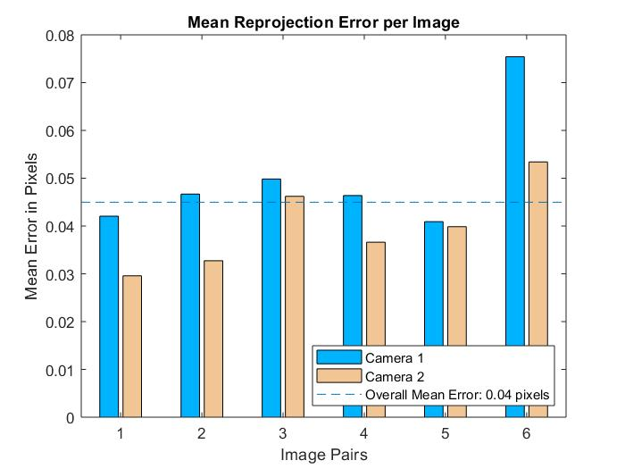
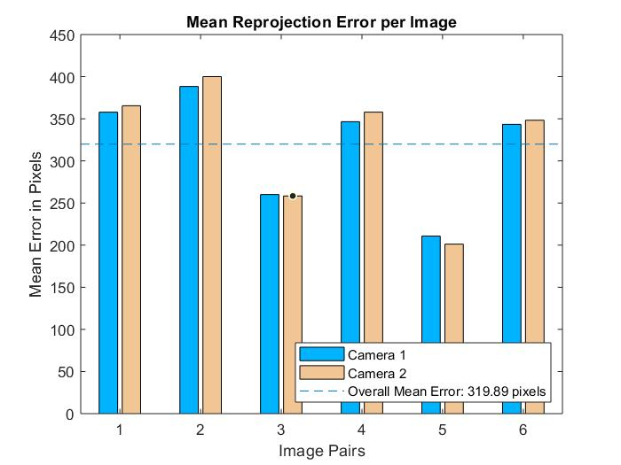
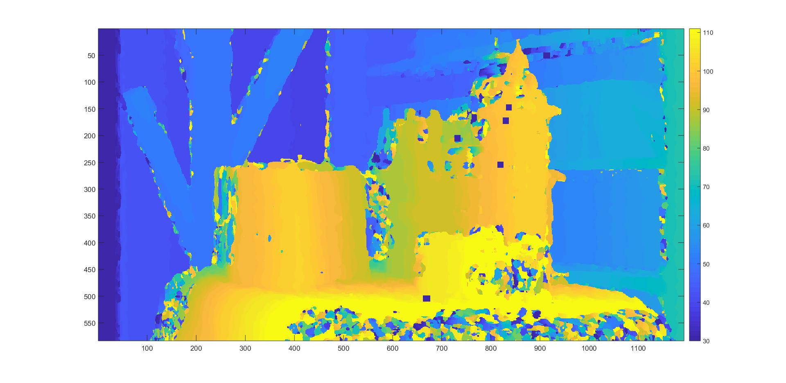
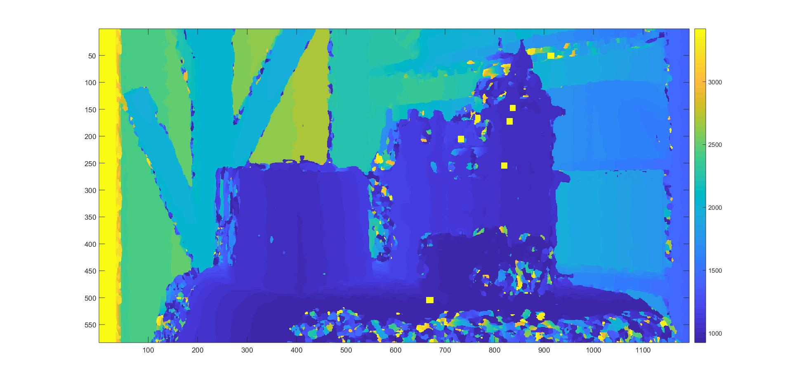
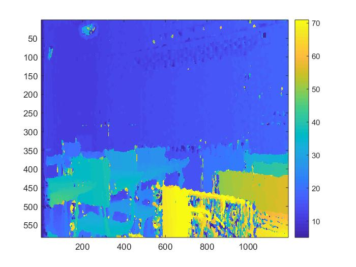
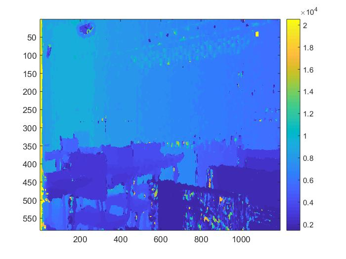

The main objectives of the work were:
Finding extrinsic and intrinsic parameters of the cameras to stereo vision application using Zhang’ Method
Depth estimation of the objects at the two photos using plane sweeping algorithm
To this task I used Matlab Toolbox with dependencies: Optimization Toolbox and Computer Vision System Toolbox.
Method described in article uses checkerboard to find extrinsic and intrinsic camera parameters. In the work I used 6 images to calibrate left camera and 6 to calibrate right camera.
Relation between points in the model space and image space could be written as:
$$s\begin{bmatrix}u \\ v \\ 1\end{bmatrix} =
\mathbf{K}\begin{bmatrix}\mathbf{r_1} & \mathbf{r_2} & \mathbf{r_3} & \mathbf{t} \end{bmatrix}\begin{bmatrix}X \\ Y \\ Z \\ 1\end{bmatrix}$$
,
where s is a scaling factor, $\begin{bmatrix}u & v & 1\end{bmatrix}^T$ are homogeneous coordinates of point in image space, K is a calibration matrix, ri are column vectors of the rotation matrix between two cameras, t is a translation vector and $\begin{bmatrix}X & Y & Z & 1\end{bmatrix}^T$ are homogeneous coordinates of point in camera space
Z coordinate of the point in the model space is 0, because all points on a checkerboard lies on the XY plane. In this case:
$$s\begin{bmatrix}u \\ v \\ 1\end{bmatrix} =
\mathbf{K}\begin{bmatrix}\mathbf{r_1} & \mathbf{r_2} & \mathbf{t} \end{bmatrix}\begin{bmatrix}X \\ Y \\ 1\end{bmatrix}$$
To find the homography matrix it is required to find a solution to the equation:
$$s\mathbf{\widetilde{q}} = \mathbf{H}\mathbf{\widetilde{p}},$$
where $\mathbf{H}=\mathbf{K}\begin{bmatrix} \mathbf{r_1} & \mathbf{r_2} & \mathbf{t}\end{bmatrix}$ is the homography matrix.
I do it by solving optimization problem:
minH∑j||Ljx||2,
where $\mathbf{L}_j =
\begin{bmatrix}
-X_j & -Y_j & -1 & 0 & 0 & 0 & u_jX_j & u_jY_j u_j \\
0 & 0 & 0 & -X_j & -Y_j & -1 & v_jX_j & v_jY_j v_j
\end{bmatrix}$ and
$\mathbf{x}^T =
\begin{bmatrix}
h_{11} & h_{12} & h_{13} & h_{21} & h_{22} & h{23} & h_{31} & h_{32} & h_{33}
\end{bmatrix}$.
Homography matrix H has to be normalized. The procedure for finding final matrix using SVD algorithm H and normalization of the matrix shows MATLAB code:
% numView - number of corresponding pictures
for nv = 1:numView
[~, Sh, Vh] = svd(L(:,:,nv));
% search for index of min. singular value
[~, index] = min(diag(Sh));
Vht = Vh';
homography(:, :, nv) = reshape(Vht(index, :), [3,3])';
end
% H matrix normalization
for nv = 1:numView
homography(:, :, nv) = homography(:, :, nv)/homography(3, 3, nv);
endTo extract intrinsic camera parameters from homography
H
I build another equation from following constraints:
r1Tr1 = rTr2andr1Tr2 = 0
, where r1 = K−1h1 and r2 = K−1h2.
I derive the optimization problem
minb||Vb||2
, subject to ||b||2 = 1, where B = K−TK−1, $b = \begin{bmatrix}
B_{11} & B_{12} & B_{13} & B_{22} & B_{23} & B_{33}
\end{bmatrix}^T$, $\mathbf{v}_{kl} =
\begin{bmatrix}
h_{1k}h_{1l} & h_{1k}h_{2l} + h_{2k}h_{1l} & h_{1k}h_{3l} + h_{3k}h_{1l} & h_{2k}h_{2l} & h_{2k}h_{3l} + h_{3k}h_{2l} & h_{3k}h_{3l}
\end{bmatrix}^T$ and $\mathbf{V} =
\begin{bmatrix}
\mathbf{v}_{12} & (\mathbf{v}_{11} - \mathbf{v}_{22})
\end{bmatrix}^T$.
In this case I also use SVD to obtain results for b matrix:
% compute b from SVD
[~, Sv, Vv] = svd(V);
% search for index of min. singular value
[~, index] = min(diag(Sv));
Vvt = Vv';
b = Vvt(index,:);I than extract intrinsic parameters from matrix b.
for every view scale parameter λ′ is different, so I coumputed it as:
$$\lambda'=\frac{1/||\mathbf{K}^{-1}\mathbf{h}_1|| = 1/||\mathbf{K}^{-1}\mathbf{h}_2||}{2}$$
, so update extrinsic parameters would be in the form:
r1 = λ′K−1h1 r2 = λ′K−1h2 r3 = r1 × r2 t = λ′K−1h3
Obtained rotation matrix R have to be rescaled using SVD to satisfy properties of the roation matrix in a way:
R = UσVT
R′:=UVT
.
I obtain matrices for intrinsic parameters K, rotation R′i and translation ti for each image i. To optimize solution which is was based on the distance and SVD decomposition I use maximum likelihood estimator to tune the parameters by minimizing
$$min_{\mathbf{K},\mathbf{R}_i,\mathbf{t}_i}\sigma_{i}\sigma_{j}||\mathbf{q}_{ij}-\mathbf{\hat{q}}_{ij}||^2$$
with initial guess from previous estimation. This procedure shows following MATLAB code:
%% Maximum likelihood estimation (section 3.2)
options = optimoptions(@lsqnonlin, 'Algorithm', 'levenberg-marquardt', ...
'TolX', 1e-32, 'TolFun', 1e-32, 'MaxFunEvals', 1e64, ...
'MaxIter', 1e64, 'UseParallel', true, 'Display', 'iter');
x0 = zeros(5 + 6 * size(imagePoints, 3), 1);
x0(1:5,1) = [alpha; beta; gamma; u0; v0];
for nv = 1:numView
x0(6+(nv-1)*size(imagePoints, 3) : 6+nv*size(imagePoints, 3)-1, 1) = ...
[rotationMatrixToVector(Rt(:,1:3,nv))'; Rt(:,4,nv)];
end
% Non-least square optimization
[objective] = @(x) func_calibration(imagePoints, worldPoints, x);
[x_hat, ~, ~, ~, ~] = lsqnonlin(objective,x0,[],[],options);
%% Build camera parameters
rvecs = zeros(numView, 3);
tvecs = zeros(numView, 3);
K = [1, 0, 0
0, 1, 0
0, 0, 1];
% Extract intrinsic matrix K, rotation vectors and translation vectors from x_hat
K = [[x_hat(1,1), x_hat(3,1), x_hat(4,1)];...
[0, x_hat(2,1), x_hat(5,1)];...
[0, 0, 1]];
for nv=1:numView
rvecs(nv, :) = x_hat(6+(nv-1)*6 : 6+(nv-1)*6+2, 1)';
tvecs(nv, :) = x_hat(6+(nv-1)*6+3 : 6+(nv-1)*6+5, 1)';
Rrr = rotationVectorToMatrix(x_hat(6+(nv-1)*6 : 6+(nv-1)*6+2, 1));
rvecs(nv, :) = rotationMatrixToVector(Rrr');
endObtained results for both cameras gives overal mean reprojection error of points on the checkerboard around 0.04 pixels. End optimization of the parameters bring the improvment of about 0.99987% (!). These improvment is shown in Figure [fig:result1]
 
In this part I calculate depth map for two scenes, having images of the same scene from two cameras with specific translation.
Images are first of all rectified and than color for every image is converted to the grayscale for simplicity of the computation.
In the process of getting depth map I use plane-sweeping algorithm, which for every disparity between images compute a cost function.
To make a 3D cost function C, where size(C)=(width × height × (maxDisparity − minDisparity) for every disparity we use Normalized Cross Correlation:
$$NCC = \frac{\Sigma_{i}\Sigma_{j}(A(i,j) - E[A(i,j)])(B(i,j)-E[B(i,j)])}
{\sqrt(\Sigma_{i}\Sigma_{j}(A(i,j)^2)\sqrt(\Sigma_{i}\Sigma_{j}(B(i,j)^2)}$$
,
where E[A(i, j)] is mean value of the patch which is used to computing of NCC between two pictures for every disparity.
I than find the maximum NCC cost for every pixel at the image and choose disparity which correspodns to it. In this way there is made the disparity map which is showed below.
Original image: scene 1
 
Original image: scene 2
 
Results for two scenes prove that plane sweeping algorithm could be used for calculating disparity maps in the simple settings.
| Scene No. | NCC filter[size] | Min_Disp [pixel] | Max_Disp[pixel] | Mean Depth Error[mm] |
| [0.5ex] 1 | [5, 5] | 30 | 110 | 394.64 |
| 2 | [5, 5] | 5 | 70 | 1869.28 |
| [1ex] |
However obtained disparity maps are noisy and can’t give a proper results on surfaces which are plain (i.e. irregular map for chair which is relatively close in scene 2). Antidote for those drawback could be using interpolation or machine learning algorithms.